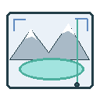
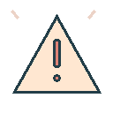

Satellite imagery
Sentinel / other imagery → lake extent and surface change.
The GLOFWatch workflow, one stage at a time.
Sentinel / other imagery → lake extent and surface change.
Optional station feeds → seismic activity and lake level.
Rainfall and temperature → conditions around each lake.
Combine each lake’s observations into structured JSON. Track timestamps, sources and missing inputs.

DeepLabV3+ estimates lake masks and area change. Risk features feed a separately validated assessment model.
Optional model evaluates Boolean, severity and category queries. Save structured outputs for review.
Check schema, data freshness and uncertainty. Apply reviewed thresholds; send uncertain results to experts.
Refresh observations and retain history for the next assessment.
Ask domain experts to inspect evidence, model output and anomalies.

Notify approved reviewers. Community alerts require an operational process.
S3 stores results. Lambda reads latest JSON. API Gateway exposes /lakes/latest.
Amplify hosts this dashboard. SNS is an optional future reviewer-notification channel.
Scoped IAM permissions, CloudWatch logs and retained model / data versions.